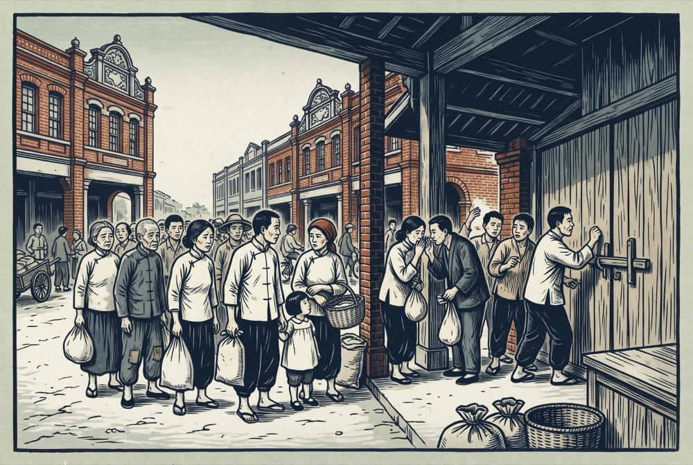

戰時餐桌・故事簡報
戰爭結束了，米卻更少了
終戰後，臺灣的米越來越難買、越來越貴。這是怎麼回事？
臺灣 1945–1947 · 共 10 頁 · 用 ← → 或滑動翻頁

看完這份簡報，你能……
- 說得出戰後缺米的兩類原因：戰爭與天災造成的減產，以及接收後的管制做法
- 能舉出一個數字，說明政府訂的米價和市場上實際的價格差多少
- 能說出研究者對「米荒是誰造成的」至少兩種不同的看法
自我檢查
戰後臺灣缺米的原因有哪兩類？
看答案
戰爭與天災造成的減產，加上接收後政府的做法（後者仍有爭議）。（第 4、5、9 頁）
政府的徵購糙米價，和農民在市場能賣的價格差多少？
看答案
依吳聰敏的數字，徵購價每百公斤 132.8 元，市場上可賣 533 元，不到三分之一。（第 6 頁）
米荒是政府造成的嗎？
看答案
蘇瑤崇、吳聰敏指向政府做法；陳懷德、楊海亮也認為政策是主因，但統計還看不出明顯影響，仍有爭議。（第 9 頁）
資料來源
內文句尾的小數字對應這裡的編號；滑鼠停在數字上可看到頁碼。
- 1
李力庸（2009）〈日本帝國殖民地的戰時糧食統制體制：臺灣與朝鮮的比較研究（1937-1945）〉
臺灣史研究 16:2（頁 63-104） 這份簡報用到：頁 77、77–78 資料卡
- 2
蘇瑤崇（2014）〈戰後臺灣米荒問題新探（1945-1946）〉
近代史研究所集刊 86（頁 95-134） 這份簡報用到：頁 101、95、117、122、130 資料卡
- 3
曾品滄（2018）〈戰時體制與臺灣大眾飲食的發展（1947–1950 年代）〉
Journal of Current Chinese Affairs 47(2): 113–136 這份簡報用到：頁 125 資料卡
- 4
曾獻緯（2015）〈戰後初期臺灣的糧食管制（1945-1949）〉
臺灣文獻 66:3（頁 53-102） 這份簡報用到：頁 61、62、64、67、70 資料卡
- 5
吳聰敏（2023）〈米荒（《台灣經濟四百年》書摘：誰的失去？政府價格管制的魔術之手）〉
報導者（The Reporter）2023/6/25 刊出之書摘，原書《台灣經濟四百年》〈米荒〉 這份簡報用到：頁 段 28、段 39、段 40、段 42、段 41 資料卡
- 6
陳懷德、楊海亮（2025）〈Rice Price Dynamics during the 1945–1947 Famine in Post-War Taiwan: A Quantitative Reassessment〉
arXiv:2512.07492v2 [econ.GN]（預印本，未經同儕審查） 這份簡報用到：頁 2、1、6 資料卡